custdata <- read.table('../Custdata/custdata.tsv',
header=TRUE,sep='\t')
runDir('../CodeExamples/c03_Exploring_data',
'../Custdata')
[1] "############################### start 20 Fri Jun 17 10:32:36 2016"
[1] "##### running ../CodeExamples/c03_Exploring_data/00020_example_3.1_of_section_3.1.R"
[1] "##### in directory ../Custdata"
> # example 3.1 of section 3.1
> # (example 3.1 of section 3.1) : Exploring data : Using summary statistics to spot problems
> # Title: The summary() command
>
> custdata <- read.table('custdata.tsv',
header=TRUE,sep='\t')
> summary(custdata)
custid sex is.employed income
Min. : 2068 F:440 Mode :logical Min. : -8700
1st Qu.: 345667 M:560 FALSE:73 1st Qu.: 14600
Median : 693403 TRUE :599 Median : 35000
Mean : 698500 NA's :328 Mean : 53505
3rd Qu.:1044606 3rd Qu.: 67000
Max. :1414286 Max. :615000
marital.stat health.ins
Divorced/Separated:155 Mode :logical
Married :516 FALSE:159
Never Married :233 TRUE :841
Widowed : 96 NA's :0
housing.type recent.move num.vehicles
Homeowner free and clear :157 Mode :logical Min. :0.000
Homeowner with mortgage/loan:412 FALSE:820 1st Qu.:1.000
Occupied with no rent : 11 TRUE :124 Median :2.000
Rented :364 NA's :56 Mean :1.916
NA's : 56 3rd Qu.:2.000
Max. :6.000
NA's :56
age state.of.res
Min. : 0.0 California :100
1st Qu.: 38.0 New York : 71
Median : 50.0 Pennsylvania: 70
Mean : 51.7 Texas : 56
3rd Qu.: 64.0 Michigan : 52
Max. :146.7 Ohio : 51
(Other) :600
> ## custid sex
> ## Min. : 2068 F:440
> ## 1st Qu.: 345667 M:560
> ## Median : 693403
> ## Mean : 698500
> ## 3rd Qu.:1044606
> ## Max. :1414286
> ##
> ## is.employed income # Note: 1
> ## Mode :logical Min. : -8700
> ## FALSE:73 1st Qu.: 14600
> ## TRUE :599 Median : 35000
> ## NA's :328 Mean : 53505
> ## 3rd Qu.: 67000
> ## Max. :615000
> ##
> ## marital.stat
> ## Divorced/Separated:155
> ## Married :516
> ## Never Married :233
> ## Widowed : 96
> ##
> ## health.ins # Note: 2
> ## Mode :logical
> ## FALSE:159
> ## TRUE :841
> ## NA's :0
> ##
> ## housing.type # Note: 3
> ## Homeowner free and clear :157
> ## Homeowner with mortgage/loan:412
> ## Occupied with no rent : 11
> ## Rented :364
> ## NA's : 56
> ##
> ## recent.move num.vehicles
> ## Mode :logical Min. :0.000
> ## FALSE:820 1st Qu.:1.000
> ## TRUE :124 Median :2.000
> ## NA's :56 Mean :1.916
> ## 3rd Qu.:2.000
> ## Max. :6.000
> ## NA's :56
> ##
> ## age state.of.res # Note: 4
> ## Min. : 0.0 California :100
> ## 1st Qu.: 38.0 New York : 71
> ## Median : 50.0 Pennsylvania: 70
> ## Mean : 51.7 Texas : 56
> ## 3rd Qu.: 64.0 Michigan : 52
> ## Max. :146.7 Ohio : 51
> ## (Other) :600
>
> # Note 1:
> # The variable is.employed is missing for
> # about a third of the data. The variable income has negative values, which are
> # potentially invalid.
>
> # Note 2:
> # About 84% of the customers have health
> # insurance.
>
> # Note 3:
> # The variables housing.type, recent.move, and
> # num.vehicles are each missing 56 values.
>
> # Note 4:
> # The average value of the variable age seems
> # plausible, but the minimum and maximum values seem unlikely. The variable
> # state.of.res is a categorical variable; summary() reports how many customers are in
> # each state (for the first few states).
>
[1] "############################### end 20 Fri Jun 17 10:32:36 2016"
[1] "############################### start 22 Fri Jun 17 10:32:36 2016"
[1] "##### running ../CodeExamples/c03_Exploring_data/00022_example_3.3_of_section_3.1.1.R"
[1] "##### in directory ../Custdata"
> # example 3.3 of section 3.1.1
> # (example 3.3 of section 3.1.1) : Exploring data : Using summary statistics to spot problems : Typical problems revealed by data summaries
> # Title: Examples of invalid values and outliers
>
> summary(custdata$income)
Min. 1st Qu. Median Mean 3rd Qu. Max.
-8700 14600 35000 53500 67000 615000
> ## Min. 1st Qu. Median Mean 3rd Qu.
> ## -8700 14600 35000 53500 67000 # Note: 1
> ## Max.
> ## 615000
>
> summary(custdata$age)
Min. 1st Qu. Median Mean 3rd Qu. Max.
0.0 38.0 50.0 51.7 64.0 146.7
> ## Min. 1st Qu. Median Mean 3rd Qu.
> ## 0.0 38.0 50.0 51.7 64.0 # Note: 2
> ## Max.
> ## 146.7
>
> # Note 1:
> # Negative values for income could indicate
> # bad data. They might also have a special meaning, like “amount of
> # debt.” Either way, you should check how prevalent the issue is,
> # and decide what to do: Do you drop the data with negative income? Do you
> # convert negative values to zero?
>
> # Note 2:
> # Customers of age zero, or customers of an
> # age greater than about 110 are outliers. They fall out of the range of
> # expected customer values. Outliers could be data input errors.
> # They could be special sentinel values: zero might mean “age unknown” or
> # “refuse to state.” And some of your customers might be especially
> # long-lived.
>
[1] "############################### end 22 Fri Jun 17 10:32:36 2016"
[1] "############################### start 23 Fri Jun 17 10:32:36 2016"
[1] "##### running ../CodeExamples/c03_Exploring_data/00023_example_3.4_of_section_3.1.1.R"
[1] "##### in directory ../Custdata"
> # example 3.4 of section 3.1.1
> # (example 3.4 of section 3.1.1) : Exploring data : Using summary statistics to spot problems : Typical problems revealed by data summaries
> # Title: Looking at the data range of a variable
>
> summary(custdata$income)
Min. 1st Qu. Median Mean 3rd Qu. Max.
-8700 14600 35000 53500 67000 615000
> ## Min. 1st Qu. Median Mean 3rd Qu.
> ## -8700 14600 35000 53500 67000 # Note: 1
> ## Max.
> ## 615000
>
> # Note 1:
> # Income ranges from zero to over half a million
> # dollars; a very wide range.
>
[1] "############################### end 23 Fri Jun 17 10:32:36 2016"
[1] "############################### start 24 Fri Jun 17 10:32:36 2016"
[1] "##### running ../CodeExamples/c03_Exploring_data/00024_example_3.5_of_section_3.1.1.R"
[1] "##### in directory ../Custdata"
> # example 3.5 of section 3.1.1
> # (example 3.5 of section 3.1.1) : Exploring data : Using summary statistics to spot problems : Typical problems revealed by data summaries
> # Title: Checking units sounds silly, but mistakes can lead to spectacular errors if not caught
>
> Income = custdata$income/1000
> summary(Income) # Note: 1
Min. 1st Qu. Median Mean 3rd Qu. Max.
-8.7 14.6 35.0 53.5 67.0 615.0
> ## Min. 1st Qu. Median Mean 3rd Qu. Max.
> ## -8.7 14.6 35.0 53.5 67.0 615.0
>
> # Note 1:
> # The variable Income is defined as Income = custdata$income/1000. But suppose you didn’t know
> # that. Looking only at the summary, the values could plausibly be
> # interpreted to mean either “hourly wage” or “yearly income in units
> # of $1000.”
>
[1] "############################### end 24 Fri Jun 17 10:32:36 2016"
[1] "############################### start 25 Fri Jun 17 10:32:36 2016"
[1] "##### running ../CodeExamples/c03_Exploring_data/00025_example_3.6_of_section_3.2.1.R"
[1] "##### in directory ../Custdata"
> # example 3.6 of section 3.2.1
> # (example 3.6 of section 3.2.1) : Exploring data : Spotting problems using graphics and visualization : Visually checking distributions for a single variable
> # Title: Plotting a histogram
>
> library(ggplot2) # Note: 1
> ggplot(custdata) +
geom_histogram(aes(x=age),
binwidth=5, fill="gray") # Note: 2
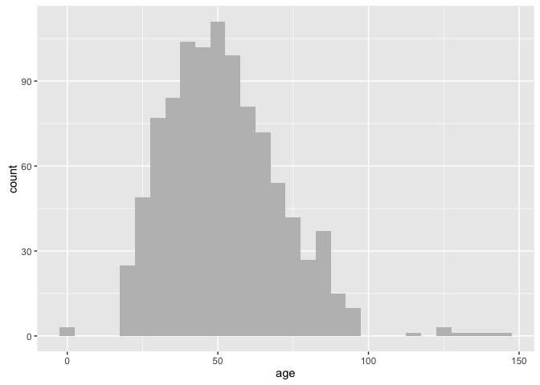
> # Note 1:
> # Load the ggplot2 library, if you haven’t
> # already done so.
>
> # Note 2:
> # binwidth parameterThe binwidth parameter tells the
> # geom_histogram call how to make bins of five-year intervals (default is
> # datarange/30). The fill parameter specifies the color of the histogram
> # bars (default: black).
>
[1] "############################### end 25 Fri Jun 17 10:32:37 2016"
[1] "############################### start 26 Fri Jun 17 10:32:37 2016"
[1] "##### running ../CodeExamples/c03_Exploring_data/00026_example_3.7_of_section_3.2.1.R"
[1] "##### in directory ../Custdata"
> # example 3.7 of section 3.2.1
> # (example 3.7 of section 3.2.1) : Exploring data : Spotting problems using graphics and visualization : Visually checking distributions for a single variable
> # Title: Producing a density plot
>
> library(scales) # Note: 1
> ggplot(custdata) + geom_density(aes(x=income)) +
scale_x_continuous(labels=dollar) # Note: 2
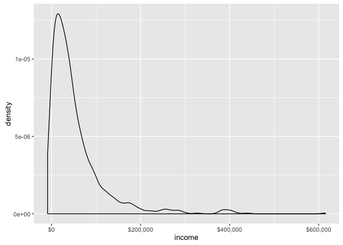
> # Note 1:
> # The scales package brings in the dollar
> # scale notation.
>
> # Note 2:
> # Set the x-axis labels to
> # dollars.
>
[1] "############################### end 26 Fri Jun 17 10:32:37 2016"
[1] "############################### start 27 Fri Jun 17 10:32:37 2016"
[1] "##### running ../CodeExamples/c03_Exploring_data/00027_example_3.8_of_section_3.2.1.R"
[1] "##### in directory ../Custdata"
> # example 3.8 of section 3.2.1
> # (example 3.8 of section 3.2.1) : Exploring data : Spotting problems using graphics and visualization : Visually checking distributions for a single variable
> # Title: Creating a log-scaled density plot
>
> ggplot(custdata) + geom_density(aes(x=income)) +
scale_x_log10(breaks=c(100,1000,10000,100000), labels=dollar) + # Note: 1
annotation_logticks(sides="bt") # Note: 2
Warning in self$trans$transform(x): NaNs produced
Warning: Removed 79 rows containing non-finite values (stat_density).
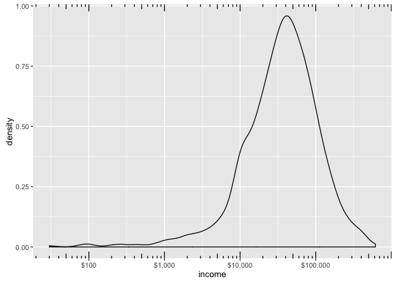
> # Note 1:
> # Set the x-axis to be in log10 scale, with
> # manually set tick points and labels as dollars.
>
> # Note 2:
> # Add log-scaled tick marks to the top and
> # bottom of the graph.
>
[1] "############################### end 27 Fri Jun 17 10:32:37 2016"
[1] "############################### start 29 Fri Jun 17 10:32:37 2016"
[1] "##### running ../CodeExamples/c03_Exploring_data/00029_informalexample_3.2_of_section_3.2.1.R"
[1] "##### in directory ../Custdata"
> # informalexample 3.2 of section 3.2.1
> # (informalexample 3.2 of section 3.2.1) : Exploring data : Spotting problems using graphics and visualization : Visually checking distributions for a single variable
>
> ggplot(custdata) + geom_bar(aes(x=marital.stat), fill="gray")
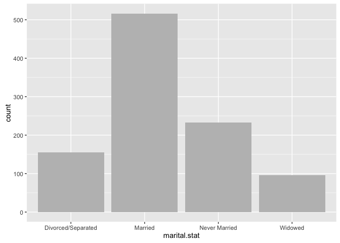
[1] "############################### end 29 Fri Jun 17 10:32:37 2016"
[1] "############################### start 30 Fri Jun 17 10:32:37 2016"
[1] "##### running ../CodeExamples/c03_Exploring_data/00030_example_3.9_of_section_3.2.1.R"
[1] "##### in directory ../Custdata"
> # example 3.9 of section 3.2.1
> # (example 3.9 of section 3.2.1) : Exploring data : Spotting problems using graphics and visualization : Visually checking distributions for a single variable
> # Title: Producing a horizontal bar chart
>
> ggplot(custdata) +
geom_bar(aes(x=state.of.res), fill="gray") + # Note: 1
coord_flip() + # Note: 2
theme(axis.text.y=element_text(size=rel(0.8))) # Note: 3
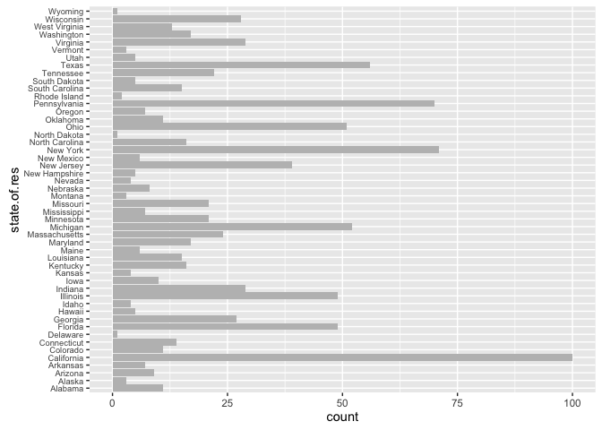
> # Note 1:
> # Plot bar chart as before: state.of.res
> # is on x axis, count is on y-axis.
>
> # Note 2:
> # Flip the x and y axes: state.of.res is
> # now on the y-axis.
>
> # Note 3:
> # Reduce the size of the y-axis tick
> # labels to 80% of default size for legibility.
>
[1] "############################### end 30 Fri Jun 17 10:32:37 2016"
[1] "############################### start 31 Fri Jun 17 10:32:37 2016"
[1] "##### running ../CodeExamples/c03_Exploring_data/00031_example_3.10_of_section_3.2.1.R"
[1] "##### in directory ../Custdata"
> # example 3.10 of section 3.2.1
> # (example 3.10 of section 3.2.1) : Exploring data : Spotting problems using graphics and visualization : Visually checking distributions for a single variable
> # Title: Producing a bar chart with sorted categories
>
> statesums <- table(custdata$state.of.res) # Note: 1
> statef <- as.data.frame(statesums) # Note: 2
> colnames(statef)<-c("state.of.res", "count") # Note: 3
> summary(statef) # Note: 4
state.of.res count
Alabama : 1 Min. : 1.00
Alaska : 1 1st Qu.: 5.00
Arizona : 1 Median : 12.00
Arkansas : 1 Mean : 20.00
California: 1 3rd Qu.: 26.25
Colorado : 1 Max. :100.00
(Other) :44
> ## state.of.res count
> ## Alabama : 1 Min. : 1.00
> ## Alaska : 1 1st Qu.: 5.00
> ## Arizona : 1 Median : 12.00
> ## Arkansas : 1 Mean : 20.00
> ## California: 1 3rd Qu.: 26.25
> ## Colorado : 1 Max. :100.00
> ## (Other) :44
> statef <- transform(statef,
state.of.res=reorder(state.of.res, count)) # Note: 5
> summary(statef) # Note: 6
state.of.res count
Delaware : 1 Min. : 1.00
North Dakota: 1 1st Qu.: 5.00
Wyoming : 1 Median : 12.00
Rhode Island: 1 Mean : 20.00
Alaska : 1 3rd Qu.: 26.25
Montana : 1 Max. :100.00
(Other) :44
> ## state.of.res count
> ## Delaware : 1 Min. : 1.00
> ## North Dakota: 1 1st Qu.: 5.00
> ## Wyoming : 1 Median : 12.00
> ## Rhode Island: 1 Mean : 20.00
> ## Alaska : 1 3rd Qu.: 26.25
> ## Montana : 1 Max. :100.00
> ## (Other) :44
> ggplot(statef)+ geom_bar(aes(x=state.of.res,y=count),
stat="identity", # Note: 7
fill="gray") +
coord_flip() + # Note: 8
theme(axis.text.y=element_text(size=rel(0.8)))
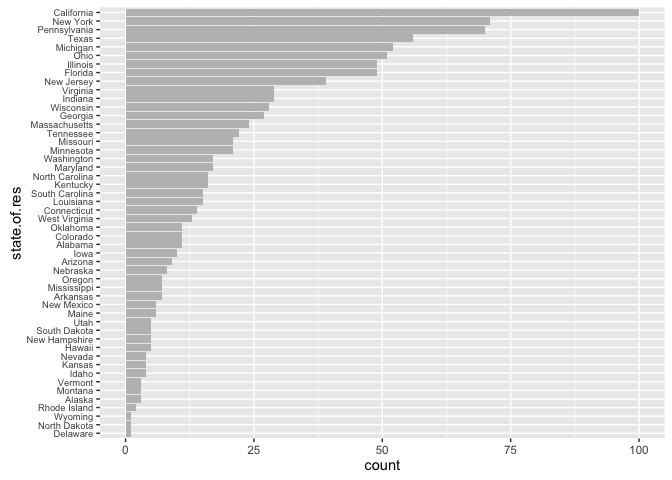
> # Note 1:
> # The table() command aggregates the data by state of residence—exactly the information the bar
> # chart plots.
>
> # Note 2:
> # Convert the table to a data frame. The default column names are Var1 and Freq.
>
> # Note 3:
> # Rename the columns for readability.
>
> # Note 4:
> # Notice that the default ordering for the
> # state.of.res variable is alphabetical.
>
> # Note 5:
> # Use the reorder() function to set the
> # state.of.res variable to be count ordered. Use the transform() function
> # to apply the transformation to the state.of.res data frame.
>
> # Note 6:
> # The state.of.res variable is now count
> # ordered.
>
> # Note 7:
> # Since the data is being passed to
> # geom_bar pre-aggregated, specify both the x and
> # y variables, and use stat="identity" to plot the
> # data exactly as given.
>
> # Note 8:
> # Flip the axes and reduce the size of the
> # label text as before.
>
[1] "############################### end 31 Fri Jun 17 10:32:38 2016"
[1] "############################### start 32 Fri Jun 17 10:32:38 2016"
[1] "##### running ../CodeExamples/c03_Exploring_data/00032_example_3.11_of_section_3.2.2.R"
[1] "##### in directory ../Custdata"
> # example 3.11 of section 3.2.2
> # (example 3.11 of section 3.2.2) : Exploring data : Spotting problems using graphics and visualization : Visually checking relationships between two variables
> # Title: Producing a line plot
>
> x <- runif(100) # Note: 1
> y <- x^2 + 0.2*x # Note: 2
> ggplot(data.frame(x=x,y=y), aes(x=x,y=y)) + geom_line() # Note: 3
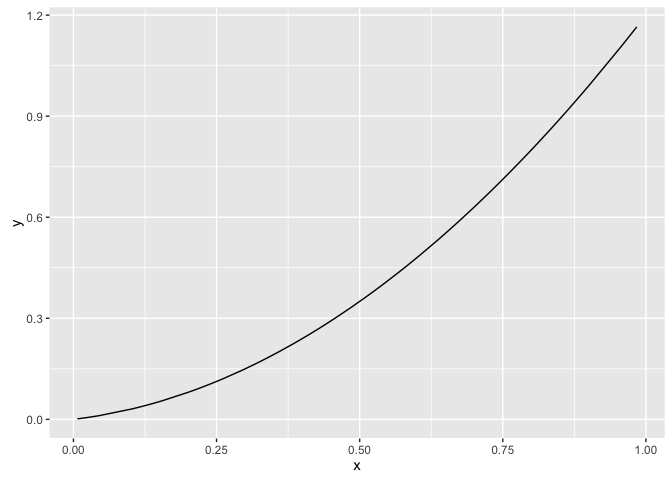
> # Note 1:
> # First, generate the data for this example.
> # The x variable is uniformly randomly distributed
> # between 0 and 1.
>
> # Note 2:
> # The y variable is a
> # quadratic function of x.
>
> # Note 3:
> # Plot the line plot.
>
[1] "############################### end 32 Fri Jun 17 10:32:38 2016"
[1] "############################### start 33 Fri Jun 17 10:32:38 2016"
[1] "##### running ../CodeExamples/c03_Exploring_data/00033_example_3.12_of_section_3.2.2.R"
[1] "##### in directory ../Custdata"
> # example 3.12 of section 3.2.2
> # (example 3.12 of section 3.2.2) : Exploring data : Spotting problems using graphics and visualization : Visually checking relationships between two variables
> # Title: Examining the correlation between age and income
>
> custdata2 <- subset(custdata,
(custdata$age > 0 & custdata$age < 100
& custdata$income > 0)) # Note: 1
> cor(custdata2$age, custdata2$income) # Note: 2
[1] -0.02240845
> ## [1] -0.02240845 # Note: 3
>
> # Note 1:
> # Only consider a subset of data with
> # reasonable age and income values.
>
> # Note 2:
> # Get correlation of age and income.
>
> # Note 3:
> # Resulting correlation.
>
[1] "############################### end 33 Fri Jun 17 10:32:38 2016"
[1] "############################### start 34 Fri Jun 17 10:32:38 2016"
[1] "##### running ../CodeExamples/c03_Exploring_data/00034_informalexample_3.3_of_section_3.2.2.R"
[1] "##### in directory ../Custdata"
> # informalexample 3.3 of section 3.2.2
> # (informalexample 3.3 of section 3.2.2) : Exploring data : Spotting problems using graphics and visualization : Visually checking relationships between two variables
>
> ggplot(custdata2, aes(x=age, y=income)) +
geom_point() + ylim(0, 200000)
Warning: Removed 32 rows containing missing values (geom_point).
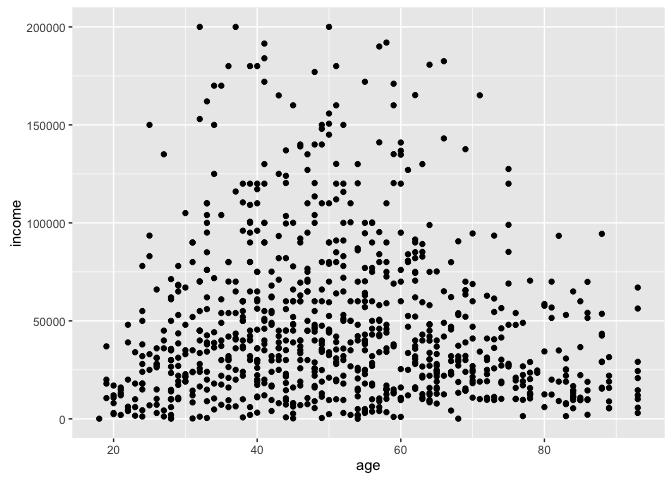
[1] "############################### end 34 Fri Jun 17 10:32:38 2016"
[1] "############################### start 35 Fri Jun 17 10:32:38 2016"
[1] "##### running ../CodeExamples/c03_Exploring_data/00035_informalexample_3.4_of_section_3.2.2.R"
[1] "##### in directory ../Custdata"
> # informalexample 3.4 of section 3.2.2
> # (informalexample 3.4 of section 3.2.2) : Exploring data : Spotting problems using graphics and visualization : Visually checking relationships between two variables
>
> ggplot(custdata2, aes(x=age, y=income)) + geom_point() +
stat_smooth(method="lm") +
ylim(0, 200000)
Warning: Removed 32 rows containing non-finite values (stat_smooth).
Warning: Removed 32 rows containing missing values (geom_point).
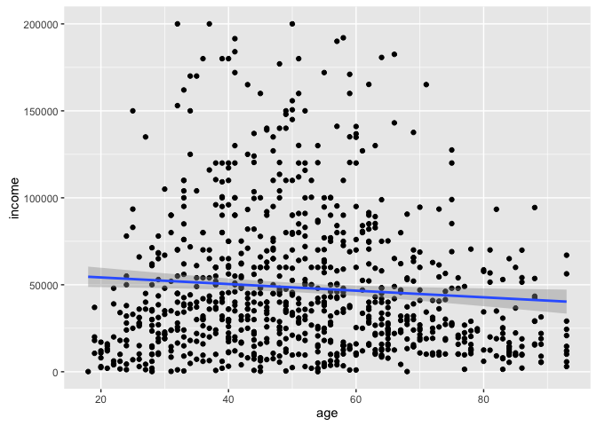
[1] "############################### end 35 Fri Jun 17 10:32:38 2016"
[1] "############################### start 36 Fri Jun 17 10:32:38 2016"
[1] "##### running ../CodeExamples/c03_Exploring_data/00036_informalexample_3.5_of_section_3.2.2.R"
[1] "##### in directory ../Custdata"
> # informalexample 3.5 of section 3.2.2
> # (informalexample 3.5 of section 3.2.2) : Exploring data : Spotting problems using graphics and visualization : Visually checking relationships between two variables
>
> ggplot(custdata2, aes(x=age, y=income)) +
geom_point() + geom_smooth() +
ylim(0, 200000)
Warning: Removed 32 rows containing non-finite values (stat_smooth).
Warning: Removed 32 rows containing missing values (geom_point).
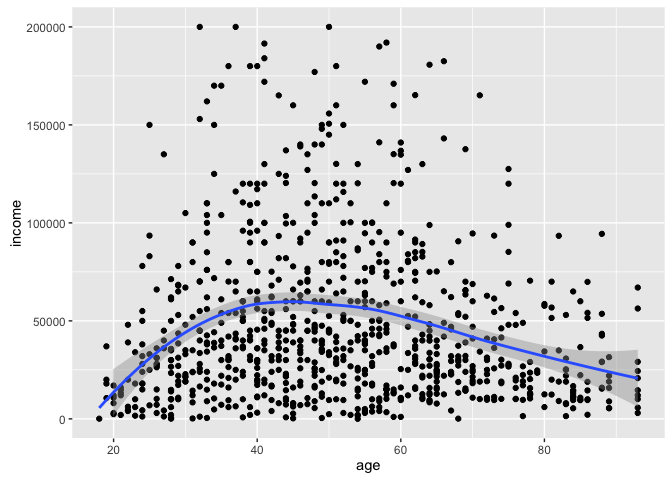
[1] "############################### end 36 Fri Jun 17 10:32:38 2016"
[1] "############################### start 37 Fri Jun 17 10:32:38 2016"
[1] "##### running ../CodeExamples/c03_Exploring_data/00037_example_3.13_of_section_3.2.2.R"
[1] "##### in directory ../Custdata"
> # example 3.13 of section 3.2.2
> # (example 3.13 of section 3.2.2) : Exploring data : Spotting problems using graphics and visualization : Visually checking relationships between two variables
> # Title: Plotting the distribution of health.ins as a function of age
>
> ggplot(custdata2, aes(x=age, y=as.numeric(health.ins))) + # Note: 1
geom_point(position=position_jitter(w=0.05, h=0.05)) + # Note: 2
geom_smooth() # Note: 3
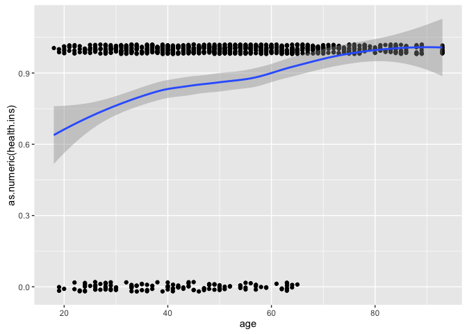
> # Note 1:
> # The Boolean variable health.ins must be
> # converted to a 0/1 variable using as.numeric.
>
> # Note 2:
> # Since y values can
> # only be 0 or 1, add a small jitter to get a sense of data
> # density.
>
> # Note 3:
> # Add smoothing curve.
>
[1] "############################### end 37 Fri Jun 17 10:32:39 2016"
[1] "############################### start 38 Fri Jun 17 10:32:39 2016"
[1] "##### running ../CodeExamples/c03_Exploring_data/00038_example_3.14_of_section_3.2.2.R"
[1] "##### in directory ../Custdata"
> # example 3.14 of section 3.2.2
> # (example 3.14 of section 3.2.2) : Exploring data : Spotting problems using graphics and visualization : Visually checking relationships between two variables
> # Title: Producing a hexbin plot
>
> library(hexbin) # Note: 1
> ggplot(custdata2, aes(x=age, y=income)) +
geom_hex(binwidth=c(5, 10000)) + # Note: 2
geom_smooth(color="white", se=F) + # Note: 3
ylim(0,200000)
Warning: Removed 32 rows containing non-finite values (stat_binhex).
Warning: Removed 32 rows containing non-finite values (stat_smooth).
Warning: Removed 13 rows containing missing values (geom_hex).
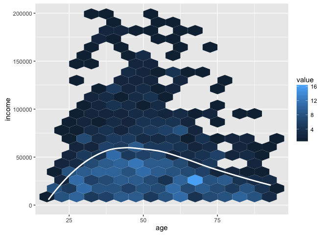
> # Note 1:
> # Load hexbin library.
>
> # Note 2:
> # Create hexbin with age binned into 5-year
> # increments, income in increments of $10,000.
>
> # Note 3:
> # Add smoothing curve in white; suppress
> # standard error ribbon (se=F).
>
[1] "############################### end 38 Fri Jun 17 10:32:39 2016"
[1] "############################### start 39 Fri Jun 17 10:32:39 2016"
[1] "##### running ../CodeExamples/c03_Exploring_data/00039_example_3.15_of_section_3.2.2.R"
[1] "##### in directory ../Custdata"
> # example 3.15 of section 3.2.2
> # (example 3.15 of section 3.2.2) : Exploring data : Spotting problems using graphics and visualization : Visually checking relationships between two variables
> # Title: Specifying different styles of bar chart
>
> ggplot(custdata) + geom_bar(aes(x=marital.stat,
fill=health.ins)) # Note: 1
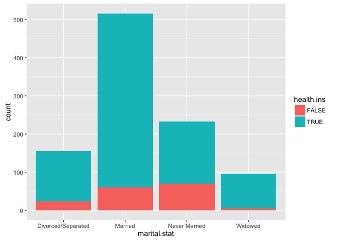
> ggplot(custdata) + geom_bar(aes(x=marital.stat,
fill=health.ins),
position="dodge") # Note: 2
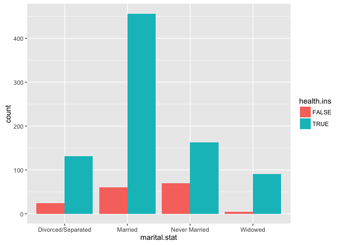
> ggplot(custdata) + geom_bar(aes(x=marital.stat,
fill=health.ins),
position="fill") # Note: 3
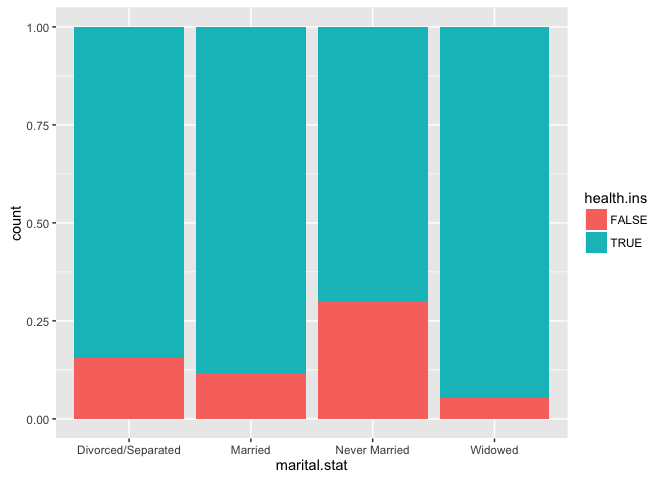
> # Note 1:
> # Stacked bar chart, the
> # default
>
> # Note 2:
> # Side-by-side bar chart
>
> # Note 3:
> # Filled bar chart
>
[1] "############################### end 39 Fri Jun 17 10:32:39 2016"
[1] "############################### start 40 Fri Jun 17 10:32:39 2016"
[1] "##### running ../CodeExamples/c03_Exploring_data/00040_example_3.16_of_section_3.2.2.R"
[1] "##### in directory ../Custdata"
> # example 3.16 of section 3.2.2
> # (example 3.16 of section 3.2.2) : Exploring data : Spotting problems using graphics and visualization : Visually checking relationships between two variables
> # Title: Plotting data with a rug
>
> ggplot(custdata, aes(x=marital.stat)) +
geom_bar(aes(fill=health.ins), position="fill") +
geom_point(aes(y=-0.05), size=0.75, alpha=0.3, # Note: 1
position=position_jitter(h=0.01)) # Note: 2
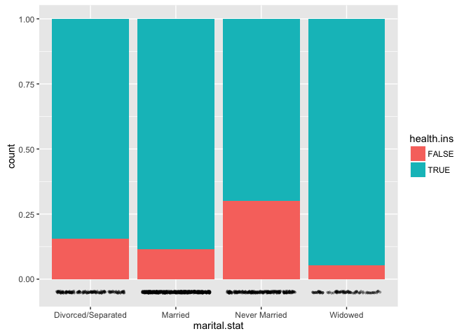
> # Note 1:
> # Set the points just under the y-axis,
> # three-quarters of default size, and make them slightly transparent with
> # the alpha parameter.
>
> # Note 2:
> # Jitter the points slightly for
> # legibility.
>
[1] "############################### end 40 Fri Jun 17 10:32:40 2016"
[1] "############################### start 41 Fri Jun 17 10:32:40 2016"
[1] "##### running ../CodeExamples/c03_Exploring_data/00041_example_3.17_of_section_3.2.2.R"
[1] "##### in directory ../Custdata"
> # example 3.17 of section 3.2.2
> # (example 3.17 of section 3.2.2) : Exploring data : Spotting problems using graphics and visualization : Visually checking relationships between two variables
> # Title: Plotting a bar chart with and without facets
>
> ggplot(custdata2) + # Note: 1
geom_bar(aes(x=housing.type, fill=marital.stat ),
position="dodge") +
theme(axis.text.x = element_text(angle = 45, hjust = 1)) # Note: 2
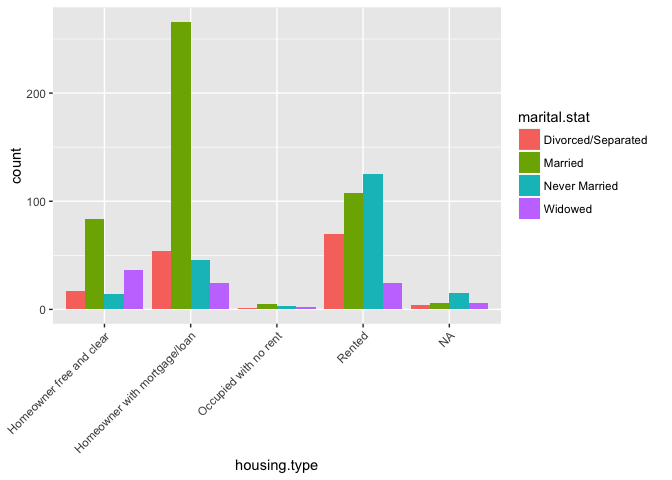
> ggplot(custdata2) + # Note: 3
geom_bar(aes(x=marital.stat), position="dodge",
fill="darkgray") +
facet_wrap(~housing.type, scales="free_y") + # Note: 4
theme(axis.text.x = element_text(angle = 45, hjust = 1)) # Note: 5
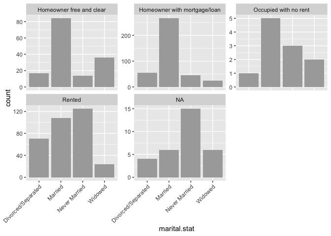
> # Note 1:
> # Side-by-side bar chart.
>
> # Note 2:
> # coord_flip commandTilt the x-axis labels so they
> # don’t overlap. You can also use coord_flip() to rotate the graph, as we
> # saw previously. Some prefer coord_flip() because the theme() layer is
> # complicated to use.
>
> # Note 3:
> # The faceted bar chart.
>
> # Note 4:
> # Facet the graph by housing.type. The scales="free_y" argument specifies that each facet has
> # an independently scaled y-axis (the default is that all facets have
> # the same scales on both axes). The argument free_x would free the
> # x-axis scaling, and the argument free frees both axes.
>
> # Note 5:
> # As of this writing,
> # facet_wrap is incompatible with coord_flip, so we have to tilt the
> # x-axis labels.
>
[1] "############################### end 41 Fri Jun 17 10:32:40 2016"